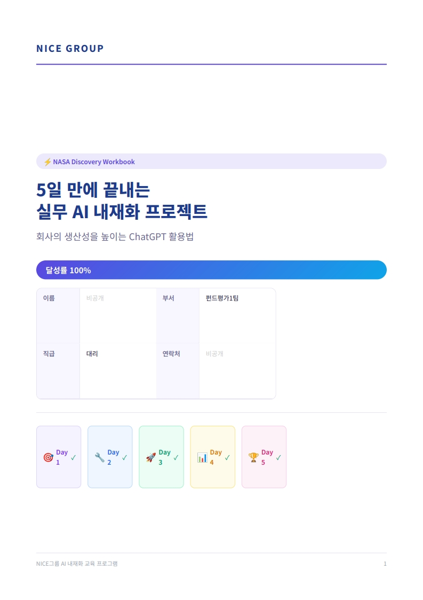
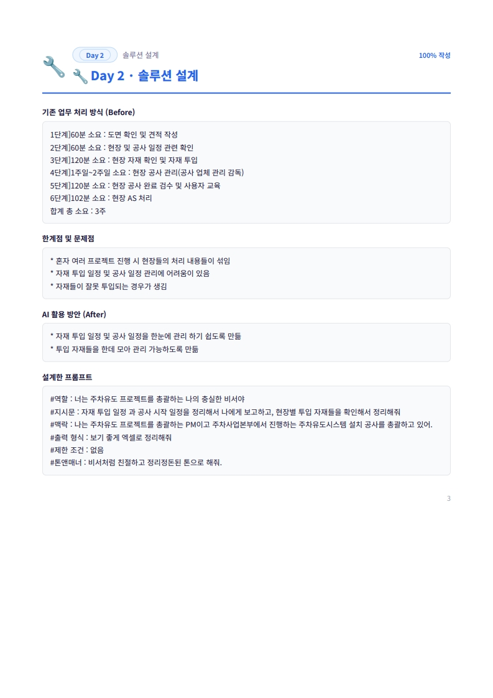
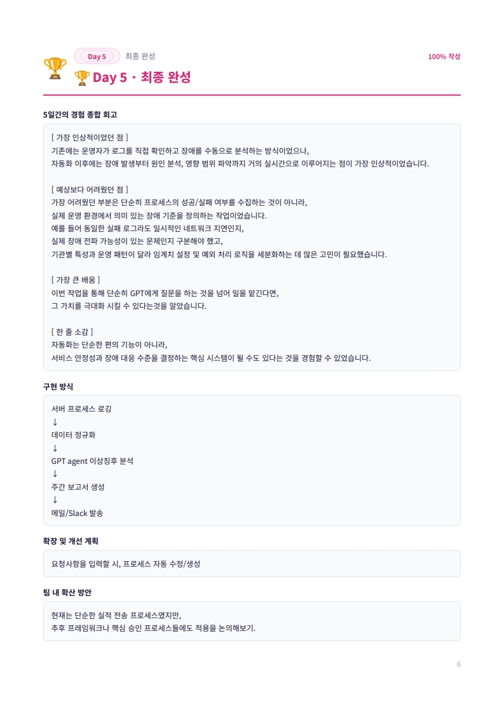
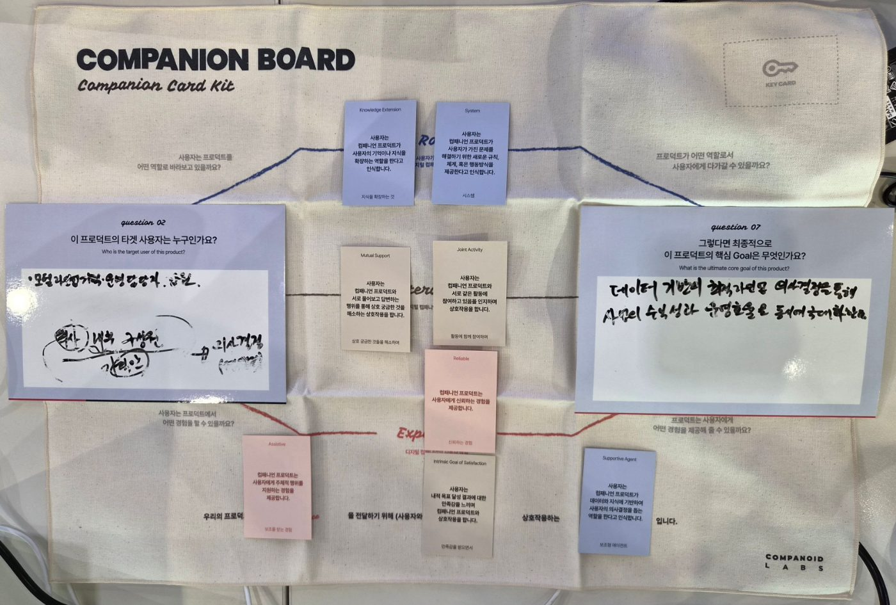
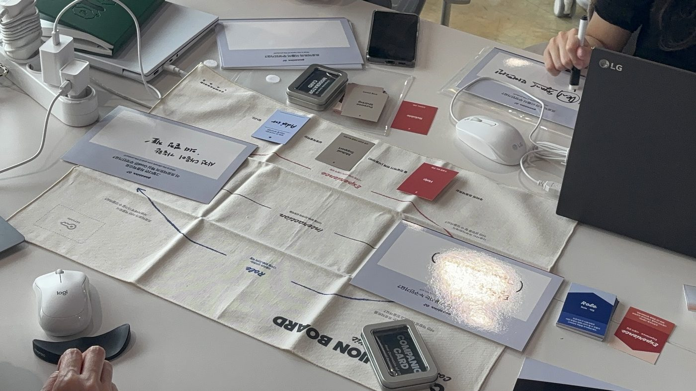

직군·직급·계열사에 관계없이 참여자 전원이 반복 업무 자동화를 핵심 목표로 설정했고,
그 목표가 5일 안에 실제 업무 변화로 이어졌습니다.
나이스그룹 전 계열사
AI 내재화 워크숍
DT 조직과 일반 직군이 같은 언어로 협업할 수 있도록, 두 트랙을 잇는 자동화 교육을 기획·운영했습니다. 13개 계열사 임직원이 직무별 미션을 직접 수행하며 자동화 사례를 만들어냈고, 이 결과물은 그룹의 일하는 방식을 바꾸는 자산이 되었습니다.
교육은 끝났는데, 이제 뭘 해야 하나요?
각 계열사마다 DT 조직을 신설했지만, 일반 직원과 DT 조직 사이의 언어와 기술 수준의 간극은 좁혀지지 않았습니다. 이 간극을 줄이는 일이 그룹 전반의 디지털 전환 속도를 결정짓는 핵심 변수였습니다.
Problem · DT 조직
기술 지식은 있지만
기술 지식은 있지만
기획력이 부족했어요
자동화 기술을 다룰 수 있지만 현업 문제와 연결하는 기획 역량이 부족했습니다. 도구 활용 능력이 실질적인 업무 혁신으로 이어지지 않는 구조였습니다.
Problem · 일반 직군
AI를 배워도
AI를 배워도
현업에서 쓰기 어려웠어요
교육을 들어도 실제 업무에 적용하기 어려웠습니다. 직무별로 어떤 데이터를 어떻게 AI와 연결해야 하는지에 대한 구체적인 기준과 사례가 부족했기 때문입니다.
두 조직이 같은 언어로 일할 수 있는 프로그램을 설계했습니다
DT 조직과 일반 직군이 함께 서로의 언어를 맞춰갈 수 있도록, Two-Track 육성 체계를 마련했습니다.
Goal
DT 조직은 현업 문제를 정의하고 기획하는 역량을 키우고,
일반 직군은 자신의 반복 업무를 AI로 직접 풀어내는 경험을 쌓는다.
Framework
AX 솔루션 3단계
W1
Step 1 · 워크플로우 정의
비개발자 주도. 자동화 대상 업무를 선정하고 조직 요구에 맞는 시나리오를 설계합니다. "AI에게 무엇을 시킬 것인가"를 업무 흐름으로 풀어냅니다.
W2-3
Step 2 · AI 자동화 설계 및 구축
개발자 주도. API 연동을 통해 다양한 시스템을 통합하고 자동화 워크플로우를 실행 가능한 형태로 구현합니다. 책임 구조와 운영 룰이 여기서 명문화됩니다.
W4
Step 3 · 테스트 및 실전 적용 (FGT 핵심)
두 직군 합동. FGT(Focus Group Test)로 실제 사용자가 시스템을 사용하며 발생하는 문제를 사전에 파악·개선합니다. 이 단계가 AI 자동화가 실무에서 작동함을 보장하는 최종 검증입니다.
Track A · 일반 직군
AI 리터러시 &
AI 리터러시 &
에이전트 빌더 중심
기획 · 마케팅 · 영업 · 경영지원 직군
직군별 페인 포인트를 분석해 커리큘럼을 설계했습니다. 교육이 끝난 직후 본인의 자동화 목표를 직접 설정하고, 5일간의 실전 미션을 수행하며 AI를 현업에 바로 적용할 수 있도록 했습니다.
1
교육 당일 — 내 업무의 AI 적용 목표 설정
2
현업 복귀 후 5일 — 미션 워크북으로 단계별 적용
3
업무 활용 사례 공모전 제출로 성과 가시화
Track B · DT 부서
노코드 자동화 &
노코드 자동화 &
현업 기획력 강화
각 계열사 DT 전담 조직
n8n 기반 노코드 자동화 실습으로 기술 숙련도를 끌어올리되, 핵심은 기술을 현업의 문제 해결로 잇는 기획력에 두었습니다.
1
현업 자동화 과제 정의 — 문제 기획부터 시작
2
n8n 워크플로우 설계 및 실습 수행
3
업무 활용 사례 공모전 제출로 성과 가시화
같은 언어로 협업하는 조직
DT 조직의 기획안을 일반 직원이 이해하고, 일반 직원의 페인 포인트를 DT 조직이 자동화로 연결하는 선순환이 완성됩니다.
교육 → 현업 연결 구조
미션 워크북이 교육과 현업 사이의 브릿지 역할을 하여 학습이 실제 업무 변화로 이어지는 경로를 만들었습니다.
우수 사례 환류로 내재화 가속
시간절감·확장성·새로운 시도의 3대 지표로 사례를 선정·시상하여 AI 활용 문화가 조직 전반으로 확산되는 체계를 구축했습니다.
일하는 방식이 달라졌습니다
교육을 통해 도출한 자동화 사례를 직무군별로 정리했습니다.
Part A · 직무군 분석
직무군별 AI 활용 핵심 니즈
📊
기업·자산 평가
펀드평가1팀 · 기업가치1팀
- 주요 실습 업무
- 비상장 기업 리서치, 산업 뉴스 자동 취합·요약
- AI 활용 핵심 니즈
- 애널리스트 수준 구조화 프롬프트, 출처·요약·키워드 동시 처리
🔍
신용·채권 분석
정보시스템실 · 경영기획본부
- 주요 실습 업무
- 신용평가 자료 자동 브리핑, 채권시장 일일 모니터링
- AI 활용 핵심 니즈
- 9개 출처 동시 취합, 영향 포인트 추출, 자동 알림 구조
📝
경영 지원
경영지원실 · NICE인프라 경영지원실
- 주요 실습 업무
- 차량 사용·월간 지표관리 보고서 자동화
- AI 활용 핵심 니즈
- CSV 업로드 → 집계·분석·보고서 초안 원샷 처리
🤝
영업·CS
KIS 법인사업2실
- 주요 실습 업무
- 실적 집계 → 사내 공지 초안 자동 생성
- AI 활용 핵심 니즈
- 데이터 추출·증감율 계산·공지문 작성 통합
⚙️
IT·운영 관제
IT 운영 · 영상사업실
- 주요 실습 업무
- ETL 이상 감지·주간 운영 보고, 주차유도시스템 PM
- AI 활용 핵심 니즈
- 로그 자동 감지, 다현장 동시 관리, 리스크 사전 알림
Part B · 개인 프로젝트 카탈로그
AI 자동화 핵심 사례
📊 기업·자산 평가
펀드평가1팀
비상장 기업 리서치 자동화 — 애널리스트 수준 프롬프트 설계
2h
→
24m
80% 절감
보다 깊게 리서치하면서 평가의 깊이를 더한 느낌
- 현안
- 분기마다 반복되는 비상장 기업 조사. 검색 30~60분 + 정리 20분 + 분석 30분으로 건당 최대 2시간. 빠듯한 일정으로 조사 품질 저하 및 야근.
- AI 활용 전략
- Executive Summary → 사업모델 → 재무추정 → 밸류에이션 → 리스크 순으로 구조화된 리서치 초안 자동 생성. 사실/해석/의견을 명확히 구분.
- 결과물
- 완성 프롬프트 + 입력 템플릿 구성. GPTs 챗봇 제작 및 팀 내 문서화 공유 계획 수립.
📊 기업·자산 평가
기업가치1팀
반도체 산업 뉴스 자동 취합 및 비상장주식 평가 연계 리포트
30m
→
1m
97% 절감
완전 자동화로 매주 7시간 30분이 사라졌다
- 현안
- 매일 기사 5개 취합 30분 + 주간 35개 기사 요약 4시간 + 보고서 작성 3시간으로 주 7시간 30분 소요.
- AI 활용 전략
- 금융권 산업 분석 전문가 역할 부여. 기사 제목·출처·요약·키워드·주식 가격 영향을 한 번에 생성. 표 형식으로 정리.
- 결과물
- 반도체 섹터 뉴스 자동 취합 프롬프트. 표 형식 출력으로 평가 보고서 즉시 연계.
🔍 신용·채권 분석
정보시스템실
신용평가 업체 기사 + DART 공시 자동 브리핑 시스템
2h30m
→
30m
80% 절감
주요 이슈 누락 리스크가 거의 사라졌다
- 현안
- 평가 업체별 포털 기사 검색 + DART 공시 수동 확인에 매일 2시간 30분. 주요 이슈 누락 위험 상존.
- AI 활용 전략
- 매일 9시 전일 기사 + DART 공시 자동 취합. 10줄 이내 요약 브리핑. 담당 업체 사전 등록.
- 결과물
- 담당 업체 등록형 자동 브리핑 프롬프트. 정정 공시 누락 문제는 프롬프트 개선으로 해결.
🔍 신용·채권 분석
경영기획본부
채권시장 모니터링 자동화 — 9개 언론사 동시 취합
1h
→
2m
97% 절감
AI는 개인 비서다 — 회의하듯 대화하며 다듬어가야 한다
- 현안
- 연합인포맥스 등 9개 언론사·기관 직접 접속하여 채권 관련 기사 수동 선별 후 보고. 매일 30분~1시간.
- AI 활용 전략
- 채권평가 20년 전문가 관점 프롬프트. 키워드 필터링·본문 분석·영향 포인트 추출·Excel 저장까지 원스톱.
- 결과물
- 그룹웨어 Share 페이지에 등록하여 팀원 누구나 복사 후 실행 가능. 파이썬 자동화 추진 계획.
📝 경영 지원
NICE인프라 경영지원실
월간 지표관리 보고서 자동화 — 수작업 오류 제로화
8h
→
12m
98% 절감
평소 안 보이던 이상값이 보이기 시작했다
- 현안
- 명부 데이터 정리 1일 + 보고서 작성 2시간 + 팀장 검토·수정 3일로 총 3일. 수작업 오류 월 평균 2~3건.
- AI 활용 전략
- 매크로로 데이터 자동 추출 + CSV 업로드 후 인력현황·변동항목·T.O 과부족·이슈 대응 한 번에 생성. GPTs로 팀 공용화.
- 결과물
- 팀 공용 GPTs. 매크로 → CSV → 보고서까지 단일 흐름으로 통합.
📝 경영 지원
경영지원실
업무용 차량 사용 현황 보고서 자동화
5h30m
→
30m
91% 절감
반복 집계에서 해방, 인사이트가 풍부해졌다 — 팀장 피드백
- 현안
- 차량별 월별 사용 데이터 수동 집계 → 보고서 작성 → 오류 수정까지 총 5시간 30분. 변경 이력·누락 문제 상존.
- AI 활용 전략
- xlsx 업로드 후 차량번호별 월별 사용일자·거리·시간 자동 집계 및 보고서 초안 생성. GPTs로 팀원 공용.
- 결과물
- 차량 보고서 GPTs. 이상값 탐지 항목 별도 출력으로 분석 집중 가능.
🤝 영업·CS
KIS 법인사업2실
영업 실적 집계 및 사내 공지 초안 자동 생성
30m
→
5m
83% 절감
엑셀 따로 만들 일이 없어졌다
- 현안
- UBMS 데이터 추출 → 엑셀 양식 집계 → 사내 공지 재입력의 3단계 수작업. 증감율 계산 오류·복붙 반복으로 약 30분.
- AI 활용 전략
- CSV 업로드 후 실적 집계 + 증감율 계산 + 공지문 초안 생성을 한 번에. 명확한 산정 기준을 프롬프트에 포함.
- 결과물
- 실적 집계·공지문 통합 프롬프트. 별도 엑셀 작성 불필요한 단일 흐름.
⚙️ IT·운영 관제
IT 운영팀
ETL 프로세스 이상 감지 및 주간 운영 보고 자동화
주 3h
→
주 12m
93% 절감 · 연 504h
자동화는 편의 기능이 아니라 서비스 안정성을 결정하는 핵심 시스템이다
- 현안
- 로그 직접 확인 → 수동 장애 분석 → SQL 집계 → 엑셀 보고서 작성. 주간 보고서만 3시간. 새벽 장애 뒤늦게 인지.
- AI 활용 전략
- 서버 로그 [ERROR][WARNING] 키워드 자동 감지 → ETL 처리 현황 자동 집계 → 주간 운영 현황 보고서 자동 생성.
- 결과물
- 로그 감지·집계·보고 통합 워크플로우. 장애 인지 18분 → 2분, ETL 성공률 98.7% → 99.94%.
⚙️ IT·운영 관제
영상사업실
주차유도시스템 PM 업무 자동화 — 6단계 → 4시트 통합 관리 설계
20h/월
→
2~3h/월
Target ~90%
프롬프트 생성기로 프롬프트를 다듬고 다시 넣고를 반복했다
- 현안
- 여러 현장 동시 진행 시 자재·일정·AS 정보가 섞여 자재 누락·오투입·일정 충돌 리스크 상시 발생. 직접 확인·작성만 7시간 42분/건.
- AI 활용 전략
- PM 비서 역할 + 자동 점검 기준 11개 + 리스크 등급 4단계 내장. 4개 시트(현장 종합 / 자재 / 공사 일정 / 리스크)로 분리 설계.
- 결과물
- 4시트 표준 양식 + 검증 기능 내장 PM 업무관리 프롬프트 v2. 프롬프트 생성기로 반복 정련.
Part C · 결과물 발췌
교육생 결과물

Day 1 · 지표 설정
펀드평가1팀 워크북
교육 당일 설정한 자동화 목표와 5일 미션 트래커

Day 2 · 솔루션 설계
영상사업실 워크북
기존 업무 분석 → AI 활용 방안 → 프롬프트 설계까지

Day 5 · 최종 완성
IT운영팀 워크북
5일간의 경험 회고와 확장·팀 확산 계획

Workshop · 아이디어 발산
직무별 자동화 아이디어 보드
Companion Board로 페인 포인트 → AI 활용 시나리오를 함께 풀어낸 세션

Workshop · 워크플로우 설계
현장 워크숍 진행 모습
카드 키트로 업무 흐름을 펼치고 자동화 지점을 직접 짚어보는 실습
Part D · 종합 인사이트
참여자 데이터에서 나온 공통 패턴
반복 업무 시간 단축
직군·계열사와 무관하게 모든 참여자의 목표가 하나로 수렴했습니다. 매일·매주 반복되는 단순 업무에서 벗어나고 싶다는 니즈가 명확했습니다.
고부가가치 업무 집중
시간을 아끼는 것 자체가 목표가 아니었습니다. 확보한 시간을 분석·전략·판단 등 사람만이 할 수 있는 업무에 집중하겠다는 의지가 공통적으로 나타났습니다.
자발적 팀 확산
참여자 전원이 완성한 프롬프트를 팀 공유 드라이브에 문서화하거나 GPTs로 공용화하는 계획을 자발적으로 수립했습니다.
주요 성과
단순 교육 운영이 아닌, 조직의 일하는 방식이 바뀌는 구조를 만들었습니다.
성과 01
전사 AI 교육
인프라 완비
13개 계열사 임직원을 직무·숙련도별로 분류하여 수준별 맞춤 AI 교육 체계를 완성하고 그룹 전체의 디지털 역량을 상향 평준화했습니다.
성과 02
교육-현업 연결
구조 안착
'교육→미션→사례 제출'의 5일 프로세스를 통해 일회성 교육이 아닌, 현업에서 AI가 실제로 작동하는 지속 가능한 학습 모델을 만들었습니다.
성과 03
즉각적 업무 혁신
경험 제공
직무별 맞춤 미션북으로 학습 직후 자신의 업무에 AI를 직접 적용하는 경험을 제공하고, 우수 사례 환류로 조직 내 AI 문화를 확산했습니다.
성과 04
우수 사례 전사
확산 체계 구축
개별 자동화 사례를 사내 라이브러리로 축적·공유하는 플랫폼을 구축하고, 우수 사례 발굴 → 시상 → 전사 확산으로 이어지는 운영 사이클을 정착시켰습니다.
성과 05
GPTs · 프롬프트
자산화 체계 구축
팀별로 분산되어 있던 GPTs와 프롬프트를 그룹 공용 라이브러리로 통합하여, AI 자산 인프라를 구축했습니다.